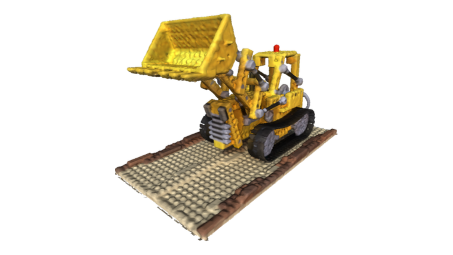
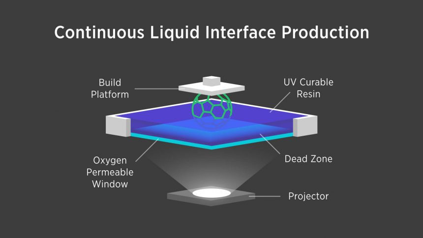

M.Sc. in Robotics, Cognition, Intelligence
Technical University of Munich (TUM) · Munich, Germany
Top 2%
Research engineer in neural rendering and visual computing: inverse and differentiable rendering, 3D reconstruction, and the perception behind robot digital twins.
With David Rozenberszki, Nikolas Brasch, Federico Tombari
Teleoperating a dual-arm Franka FR3 station in VR from inside a live digital twin: a splat scan of the table, the arms from joint state, every object a tracked mesh.
With Osama Salem, Matthias Nießner
Reconstructing high-fidelity material properties and geometry from OLAT (One-Light-at-a-Time) lightstage data using a custom differentiable rasterizer.

With Ignacio Dassori, Lukas Höllein
Extended differentiable volumetric rendering framework by integrating monocular depth/normal priors into a CUDA raytracing pipeline, outperforming 2D Gaussian Splatting in mesh quality.
Real-time 3D reconstruction algorithm fusing RGB-D sensor data into a dense volumetric model using a TSDF representation.

Developed control software and GUI for a high-precision Continuous Liquid Interface Production (CLIP) 3D printer, achieving 20-micron resolution.
Augmented Reality guidance system for a 3-point sequential biopsy simulation, implementing real-time tracking and visual aids for surgical precision.
Munich Robotics Hackathon · June 14–15, 2025
A dual-arm robotic system that uses a pipeline of computer vision, large language models, and imitation learning to transform digital images into physical drawings with colored stencils. Developed in 48 hours.
Technical University of Munich (TUM) · Munich, Germany
Sungkyunkwan University (SKKU) · Seoul, South Korea
Technical University of Munich
Sungkyunkwan University (Prof. Brian J. Lee)
MAN Truck & Bus Korea
Sungkyunkwan University (Prof. Jinkee Lee)
Plasmatreat Korea
Volunteer in Kindergarten (Makkabi Lauder) · Samara, Russia